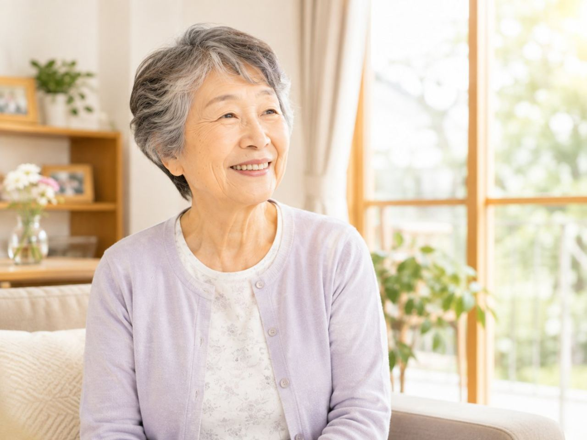

甲状腺のはたらきが低下すると、抜けないだるさ、むくみ、手足の冷え、動きの重さ、気分の沈みなどがあらわれ、高齢の方では「歳のせい」と見過ごされがちです。訪問鍼灸マッサージは、甲状腺の病気そのものを治療するものではありませんが、主治医の管理のもとで、こわばった筋肉をやわらげ、だるさや冷え、むくみをほぐして過ごしやすさを支える役割を担えます。国家資格を持つ施術者が、その日の体調に合わせて力を加減し、負担にならない程度にていねいにケアします。医師の同意にもとづいて医療保険が使え、1回の自己負担は1割の方でおよそ395円です。要介護認定は不要で、介護保険の限度額とは別枠です。甲状腺の不調は薬での調整が基本なので、診断や治療は主治医にゆだね、施術は暮らしを支える役割にとどめます。ここでは、できることと気をつける点を整理します。あらわれ方には個人差があります。
この記事のポイント
主治医の方針を確かめたうえで、体調に合わせて負担のない範囲で行うことが多くなります。薬の調整中は特にていねいに加減します。まずはご相談ください。
甲状腺の不調で、どんな変化が起きやすい？
甲状腺は、体の代謝を調整するホルモンを出す小さな器官です。そのはたらきが低下すると、抜けないだるさ、顔や手足のむくみ、寒がり・冷え、動きの重さ、気分の沈み、便秘などがあらわれます。高齢の方では「歳のせい」「疲れているだけ」と見過ごされやすく、気づかないうちに活動が減っていくことも。
こうした体の重さやこわばりに、家にいたまま受けられるのが訪問鍼灸マッサージです。甲状腺の病気は血液検査で分かり、薬で調整するのが基本なので、診断と治療は主治医にゆだね、施術は暮らしを支える役割になります。
訪問鍼灸マッサージの役割｜だるさ・冷え・こわばりをほぐす
のびのびの訪問鍼灸マッサージでは、動きが減って固くなった筋肉をやわらげ、だるさや冷え、むくみに、手技やお灸のあたたかさで働きかけます。鍼灸をベースに、関節が固まらないよう体の様子を見ながら動かす運動も、その日の状態に応じて加えます。ねらいは、甲状腺の病気を治すことではなく、体の重さやこわばりをやわらげて過ごしやすくすること。
お灸のあたたかさで手足の冷えがやわらいだと感じる方もいますが、あらわれ方には個人差があります。強い刺激ではなく、心地よさを大切にしたケアを行います。
「歳のせい」と決めつけない｜受診の後押しも
甲状腺の不調は、症状がゆっくり進むため見過ごされがちです。だるさやむくみ、冷え、気分の沈みが続くのに原因がはっきりしないときは、一度血液検査で甲状腺の状態を調べてもらう価値があります。
訪問鍼灸マッサージの施術者は、体の様子で気づいたことをご家族や医療に共有し、必要なら受診の後押しをします。施術で不調を診断するわけではありませんが、変化に気づく目として、医療につなぐ橋渡しの役割も担えます。
体調を見ながら加減する｜薬の調整中は特にていねいに
甲状腺の不調は、薬でホルモンの量を調整していく時期に体調が変わりやすくなります。のびのびでは、その日のだるさやむくみ、脈の様子をうかがい、体に合わせて力や時間を加減します。動悸が強い、体調がすぐれないといったときは、施術を軽くしたり控えたりする判断もします。
安全を最優先に、無理をしないのが基本です。薬の内容や体調の変化は主治医が管理するものなので、気づいた変化はそのつど医療とご家族に共有します。
主治医との連携｜医療の管理のなかで行う
甲状腺の不調のケアは、主治医による診断と薬の調整が土台です。訪問鍼灸マッサージは、その医療の枠のなかで、だるさや冷え、こわばりを軽くする役割になります。のびのびでは、施術で気づいた体の様子を、医師やケアマネジャーと共有しながら進めます。
むくみや脈、気分の変化など、医療につなぐべきサインに気づいたらお伝えします。在宅を支えるチームの一員として、その方の生活リズムを尊重しながらケアします。
料金と保険｜1回およそ395円から、限度額とは別枠
のびのびの訪問鍼灸マッサージは、医師の同意にもとづく医療保険で受けられます。総額3,950円のうち、1割負担の方がお支払いになるのはおよそ395円です。月々いくらになるかは、受ける回数によります。目安は料金のページにまとめています。
医療保険で受けるため、介護保険の支給限度額とは別枠。要介護認定も条件ではありません。エリア内であればお住まいの場所で金額が変わることはありません。始める前に負担額と回数の見通しをお伝えします。どんな方が使えるのかは「対象者のページ」で詳しくご紹介しています。
受けるまでの流れ｜相談から始められます
はじめは、対象になりそうかの確認や、体の状態を見せていただく相談から始められます。医師の同意書の手続きはのびのびがお手伝いします。無理な勧誘をしたり、契約を急かしたりすることはありません。同意書を頼みにくいときは「鍼灸の同意書を書いてもらえないとき」が参考になります。
だるさや冷えが続いてつらいとき、まずは気軽にご相談ください。体調を見ながら無理のない範囲で進めますので、気になる点は遠慮なくお伝えください。合わないと感じたら、無理に続ける必要はありません。
ご家族へ｜変化に気づいたら医療へ
甲状腺の不調は見過ごされやすいぶん、そばで見ているご家族の気づきが助けになります。だるさが続く、むくみや冷えが強い、気分が沈みがち、といった変化が続くときは、一度医療に相談することが大切です。訪問鍼灸マッサージの施術者も、体の様子で気づいたことを共有します。
数百円で続けられる体のケアの積み重ねが、日々の過ごしやすさや気持ちの支えにつながることもあります。なお、施術は病気そのものに働きかけるものではなく、感じ方には個人差があります。
よくある質問
甲状腺の不調があっても訪問鍼灸マッサージを受けられますか？
主治医の方針を確かめたうえで、体調に合わせて負担のない範囲で行うことが多くなります。薬の調整中は特にていねいに加減します。まずはご相談ください。
だるさや冷えはよくなりますか？
訪問鍼灸マッサージは甲状腺の病気を治すものではありません。こわばりやだるさ、冷えをやわらげて過ごしやすさを支える役割で、効き方には個人差があります。
甲状腺の不調かどうか、施術で分かりますか？
施術で診断はできません。だるさやむくみが続くときは血液検査で調べてもらう価値があり、施術者は気づいた変化を医療やご家族に共有し、受診の後押しをします。
費用の目安を教えてください。
医師の同意書があれば医療保険の対象になります。費用は1回3,950円の総額、1割負担ならおよそ395円です。介護保険の限度額とは別枠で、要介護認定は不要です。